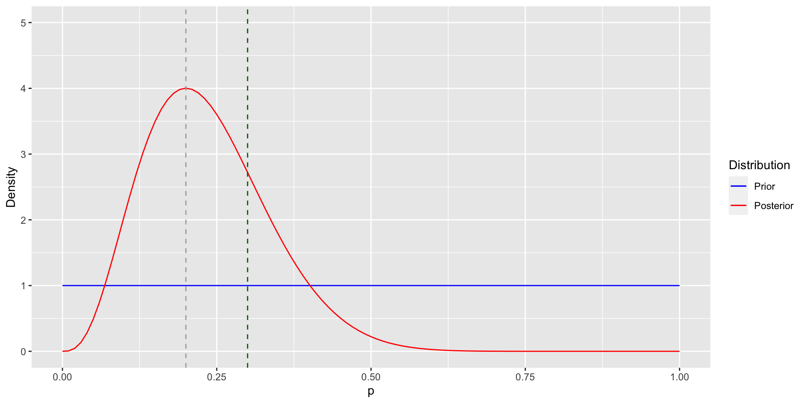
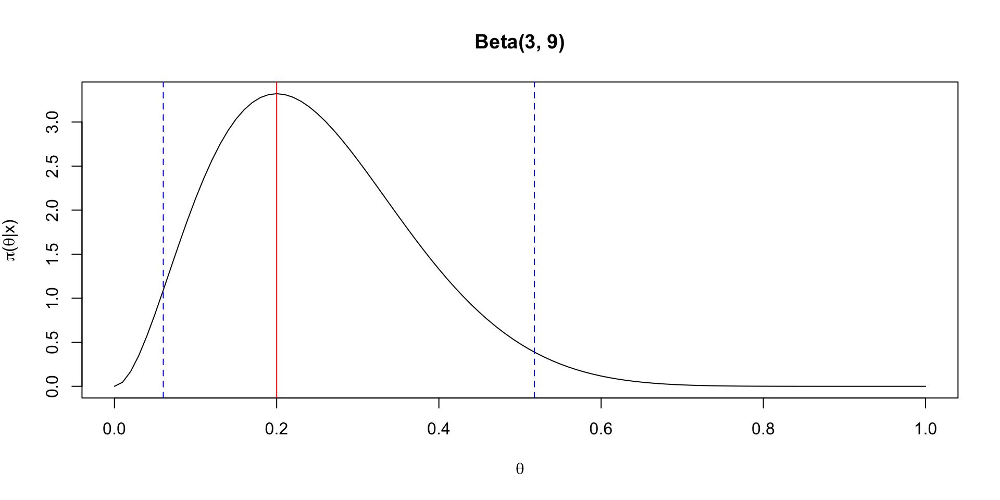
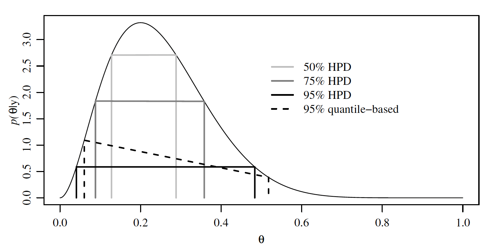

[1] 0 0 0 0 0 0 0 0 0 0 1 0 0 1 1\[ \newcommand{\mc}[1]{\mathcal{#1}} \newcommand{\R}{\mathbb{R}} \newcommand{\E}{\mathbb{E}} \renewcommand{\P}{\mathbb{P}} \newcommand{\var}{{\rm Var}} % Variance \newcommand{\mse}{{\rm MSE}} % MSE \newcommand{\bias}{{\rm Bias}} % MSE \newcommand{\cov}{{\rm Cov}} % Covariance \newcommand{\iid}{\stackrel{\rm iid}{\sim}} \newcommand{\ind}{\stackrel{\rm ind}{\sim}} \renewcommand{\choose}[2]{\binom{#1}{#2}} % Choose \newcommand{\chooses}[2]{{}_{#1}C_{#2}} % Small choose \newcommand{\cd}{\stackrel{d}{\rightarrow}} \newcommand{\cas}{\stackrel{a.s.}{\rightarrow}} \newcommand{\cp}{\stackrel{p}{\rightarrow}} \newcommand{\bin}{{\rm Bin}} \newcommand{\ber}{{\rm Ber}} \DeclareMathOperator*{\argmax}{argmax} \DeclareMathOperator*{\argmin}{argmin} \]
Bayes Theorem: \[\begin{align*} \pi(p \mid x) & = \frac{f(x \mid p) \pi(p)}{\int f(x \mid p) \pi(p) dp} = \frac{\text{likelihood} \times \text{prior}}{\text{marginal}}\\ & \propto f(x \mid p) \pi(p) = \text{likelihood} \times \text{prior} \end{align*}\]
The marginal (and other normalizing constants) can be ignored.
The likelihood is \[ f(x_1, \ldots, x_n \mid p) = \prod_{i=1}^n p^{x_i}(1-p)^{1-x_i} = p^{\sum_{i=1}^n x_i}(1-p)^{n - \sum_{i=1}^n x_i}. \]
The prior is \[ \pi(p) = \frac{1}{B(\alpha, \beta)} p^{\alpha-1} (1-p)^{\beta-1} \propto p^{\alpha-1}(1-p)^{\beta - 1}. \]
Hence the posterior is \[\begin{align*} \pi(p \mid X_1, \ldots, X_n) & \propto p^{\sum_{i=1}^n x_i}(1-p)^{n - \sum_{i=1}^n x_i} \times p^{\alpha-1}(1-p)^{\beta - 1}\\ & = p^{\alpha + \sum_{i=1}^n x_i - 1}(1-p)^{\beta + n - \sum_{i=1}^n x_i - 1}. \end{align*}\]
Recognizing that this is the kernel of a Beta distribution, the posterior is \[ p \mid X_1, \ldots, X_n \sim \text{Beta}\left(\alpha + \sum_{i=1}^n X_i, \beta + n - \sum_{i=1}^n X_i \right). \]
It’s called Beta-Binomial model since the posterior only depends on \(\sum X_i\) and the distribution of \(\sum X_i\) is \(\bin(n,p)\).
The kernel is the form of the pdf or pmf in which any factors that are not functions of any of the variables in the domain are omitted.
Examples:
We can use only the kernels to simplify the computation.
[1] 0 0 0 0 0 0 0 0 0 0 1 0 0 1 1library(ggplot2)
ggplot(data = data.frame(p = c(0, 1)), aes(p)) +
lims(x = c(0, 1), y = c(0, 5)) +
labs(x = "p", y = "Density") +
geom_function(fun = dunif, aes(col = "blue")) +
geom_function(fun = dbeta, aes(col = "red"),
args = list(shape1 = s + 1, shape2 = n - s + 1)) +
geom_vline(xintercept = p_mle, linetype = "dashed", col = "darkgrey") +
geom_vline(xintercept = p, linetype = "dashed", col = "darkgreen") +
scale_colour_manual(name = "Distribution",
values = c("blue", "red"),
labels = c("Prior", "Posterior"))
Given binary iid random variables \(X_1, \ldots, X_n\) with \(\sum_{i=1}^n X_i = s\), then \[\P\left(X_{n+1}=1 \mid X_1+\cdots+X_n=s\right)=\frac{s+1}{n+2}.\]
Derivation:
To find a \(100\times(1-\alpha)\%\) credible interval for \(\theta\):
Find numbers \(\theta_{\alpha / 2} < \theta_{1-\alpha / 2}\) such that
The numbers \(\theta_{\alpha / 2}, \theta_{1-\alpha / 2}\) are the \(\alpha / 2\) and \(1-\alpha / 2\) posterior quantiles of \(\theta\), and so \[\begin{align*} \P\left(\theta \in\left[\theta_{\alpha / 2}, \theta_{1-\alpha / 2}\right] \mid X = x\right) & =1-\P\left(\theta \notin\left[\theta_{\alpha / 2}, \theta_{1-\alpha / 2}\right] \mid X = x\right) \\ & =1-\left[\P\left(\theta<\theta_{\alpha / 2} \mid X=x\right)\right.\\ & \qquad \left.+\P\left(\theta>\theta_{1-\alpha / 2} \mid X = x\right)\right] \\ & =1-\alpha. \end{align*}\]
Suppose we observed \(X=2\) from a \(\bin(10, p)\). Assume the uniform prior \(p\).
Definition 1 A \(100 \times(1-\alpha) \%\) HPD region consists of a subset of the parameter space, \(s(x) \subset \Theta\) such that
Let’s compute the HPD for the previous example: \(\theta \mid X = 2 \sim \text{Beta}(3, 9)\).
lower upper
0.04056 0.48372
attr(,"credMass")
[1] 0.95The HPD is narrower than the quantile-based interval.

| Sampling model | Parameter | Prior | Posterior |
|---|---|---|---|
| \(X \sim \bin(n, p)\) | \(p\) | \(\text{Beta}(\alpha_0, \beta_0)\) | \(\text{Beta}(\alpha_0 + X, \beta_0+n-X)\) |
| \(X \sim N(\mu, \sigma^2)\) | \(\mu\) | \(N(\mu_0, \sigma_0^2)\) | \(N\left(\frac{1}{\frac{1}{\sigma_0^2}+\frac{1}{\sigma^2}}\left(\frac{\mu_0}{\sigma_0^2}+\frac{ X}{\sigma^2}\right),\left(\frac{1}{\sigma_0^2}+\frac{1}{\sigma^2}\right)^{-1}\right)\) |
| \(X \sim \text{Poisson}(\lambda)\) | \(\lambda\) | \(\text{Gamma}(\alpha_0, \beta_0)\) | \(\text{Gamma}(\alpha_0 + X, \beta+1)\) |
| \(X \sim \text{Gamma}(\alpha, \beta)\) | \(\beta\) | \(\text{Gamma}(\alpha_0, \beta_0)\) | \(\text{Gamma}(\alpha_0 + \alpha, \beta_0+X)\) |
| \(X \sim \text{NB}(r, p)\) | \(p\) | \(\text{Beta}(\alpha_0, \beta_0)\) | \(\text{Beta}(\alpha_0 + r, \beta_0+X)\) |
library(tidyverse)
library(knitr)
m <- 856; f <- 731
prior_mean <- c(0.5, 0.5122, 0.5122, 0.5122, 0.5122, 0.5122)
a_b <- c(2, 2, 10, 100, 1000, 10000)
alpha <- prior_mean*a_b
beta <- a_b - alpha
data.frame(alpha, beta, prior_mean) |>
mutate(a_b = alpha + beta,
post_mean = (alpha+m)/(alpha+beta+m+f),
ratio = post_mean/(1-post_mean),
post_int = paste0("[", round(qbeta(0.025, alpha + m, beta + f), 3),
", ", round(qbeta(0.975, alpha + m, beta + f), 3), "]")) |>
select(c(prior_mean, a_b, post_mean, ratio, post_int)) |>
kable(format = "markdown", digits = 4,
col.names = c("Prior mean $\\frac{\\alpha}{\\alpha+\\beta}$",
"$\\alpha + \\beta$",
"Post. mean", "Gender ratio",
"Post. 95% Interval"))| Prior mean \(\frac{\alpha}{\alpha+\beta}\) | \(\alpha + \beta\) | Post. mean | Gender ratio | Post. 95% Interval |
|---|---|---|---|---|
| 0.5000 | 2 | 0.5393 | 1.171 | [0.515, 0.564] |
| 0.5122 | 2 | 0.5393 | 1.171 | [0.515, 0.564] |
| 0.5122 | 10 | 0.5392 | 1.170 | [0.515, 0.564] |
| 0.5122 | 100 | 0.5378 | 1.163 | [0.514, 0.562] |
| 0.5122 | 1000 | 0.5289 | 1.123 | [0.51, 0.548] |
| 0.5122 | 10000 | 0.5159 | 1.066 | [0.507, 0.525] |
Small area estimation is any of several statistical techniques involving the estimation of parameters for small sub-populations, generally used when the sub-population of interest is included in a larger survey1.
Definition 2 Let \(p\left(x_1, \ldots, x_n\right)\) be the joint density of \(X_1\), \(\ldots, X_n\). If \(p\left(x_1, \ldots, x_n\right)=p\left(x_{\pi(1)}, \ldots, x_{\pi(n)}\right)\) for all permutations \(\pi\) of \(\{1, \ldots, n\}\), then \(X_1, \ldots, X_n\) are exchangeable.
Proposition 1 If \(\theta \sim p(\theta)\) and \(X_1, \ldots, X_n\) are conditionally i.i.d. given \(\theta\), then marginally (unconditionally on \(\theta\) ) \(, X_1, \ldots, X_n\) are exchangeable.
Proof. Suppose \(X_1, \ldots, X_n\) are conditionally iid given some unknown parameter \(\theta\). Then for any permutation \(\pi\) of \(\{1, \ldots, n\}\) and any set of values \(\left(x_1, \ldots, x_n\right) \in\) \(\mc{X}^n\) \[\begin{align*} p\left(x_1, \ldots, x_n\right) & =\int p\left(x_1, \ldots, x_n \mid \theta\right) p(\theta) d \theta & & \text { (definition of marginal probability) } \\ & =\int\left\{\prod_{i=1}^n p\left(x_i \mid \theta\right)\right\} p(\theta) d \theta & & \text { ($X$'s are conditionally i.i.d.) } \\ & =\int\left\{\prod_{i=1}^n p\left(x_{\pi(i)} \mid \theta\right)\right\} p(\theta) d \theta & & \text { (product does not depend on order) } \\ & =p\left(x_{\pi(1)}, \ldots x_{\pi(n)}\right) & & \text { (definition of marginal probability) } . \end{align*}\]
Theorem 1 (de Finetti) Let \(X_i \in \mc{X}\) for all \(i \in\{1,2, \ldots\}\). Suppose that, for any \(n\), \(X_1, \ldots, X_n\) are exchangeable. Then our model can be written as \[\begin{align*} p\left(x_1, \ldots, x_n\right)=\int\left\{\prod_{i=1}^n p\left(x_i \mid \theta\right)\right\} p(\theta) d \theta \end{align*}\] for some parameter \(\theta\), some prior distribution on \(\theta\) and some sampling model \(p(x \mid \theta)\). The prior and sampling model depend on \(p\left(x_1, \ldots, x_n\right)\).
This justifies the use of prior distributions when samples are exchangeable.
When is the condition “\(X_1, \ldots, X_n\) are exchangeable for all \(n\)” reasonable?
Let \(\theta\) be the probability of a particular coin landing on heads, and suppose we want to test the hypotheses \[\begin{align*} H_0: \theta=1 / 2, \quad H_1: \theta>1 / 2 \end{align*}\] at a significance level of \(\alpha=0.05\). Suppose we observe the following sequence of flips: \[ \text{heads, heads, heads, heads, heads, tails (5 heads, 1 tails)} \]
Suppose the experiment is “Flip six times and record the results.”
Suppose now the experiment is “Flip until we get tails.”